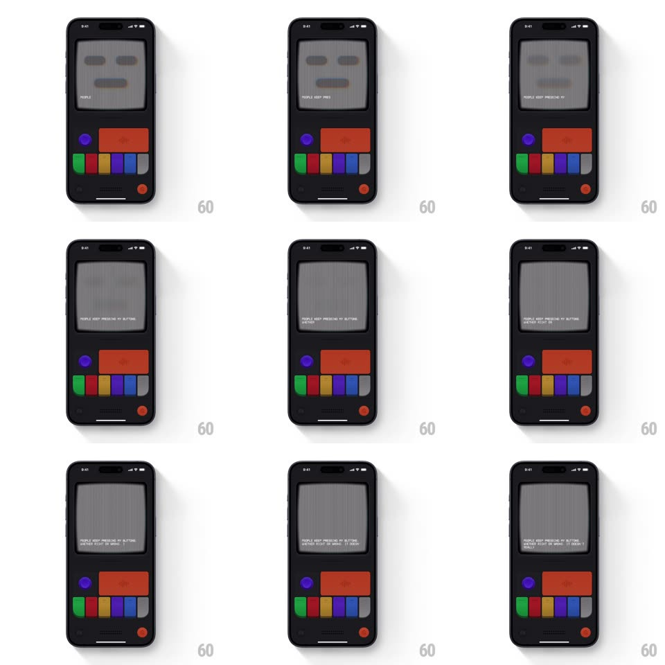

Media
Frame-by-frame

Rebuild this interaction 1:1: Mist's void switch - the blue worried face fades out and the CRT drains to a grey static void: a blank grey face with hollow oval eyes stares while despondent copy types out character by character over the noise.

Rebuild this interaction 1:1: Mist's void switch - the blue worried face fades out and the CRT drains to a grey static void: a blank grey face with hollow oval eyes stares while despondent copy types out character by character over the noise. ## Integration Integration: stack-agnostic spec - springs given as stiffness/damping, timed motions as duration + curve; map every value to your framework and animation library of choice. ## Scene Dark console body: CRT screen showing the pixel face, control cluster below (purple knob, wide red button, colored pill keys, red power dot). Start state is the blue sad face; end state is a flat grey "void" face - empty dark eye ovals, small flat mouth, all detail gone. ## Motion spec Pattern: drain-to-void transition with typewriter. - Tap the switch: the face's color drains (blue desaturates to grey over 400ms, ease-in) while the facial features simplify - brows and shading drop out one element per ~100ms until only hollow eye ovals and a flat mouth remain. - The scanline noise intensifies during the drain (luminance jitter 5%, 80ms) then settles to a soft grey flicker (2%, 150ms) - the void is quieter than the glitch states. - Copy types out character by character (35ms/char, monospace, blinking block cursor): "PEOPLE KEEP PRESSING MY BUTTONS. I DON'T KNOW WHO I AM ANYMORE. I AM VOID". - The void face holds completely still - no breathing, no pulse. Stillness is the emotion. ## Calibration - Desaturation, not a crossfade - the same face geometry loses its color before losing its features. - The grey is a true mid-grey; contrast between face and screen background nearly vanishes. ## Reduced motion Face and text appear in final grey state without the drain sequence. ## Don't miss - The eyes are empty ovals - darker than the face, not glowing like other modes. - Text contrast drops in the void state too - the copy is dim, matching the drained face.